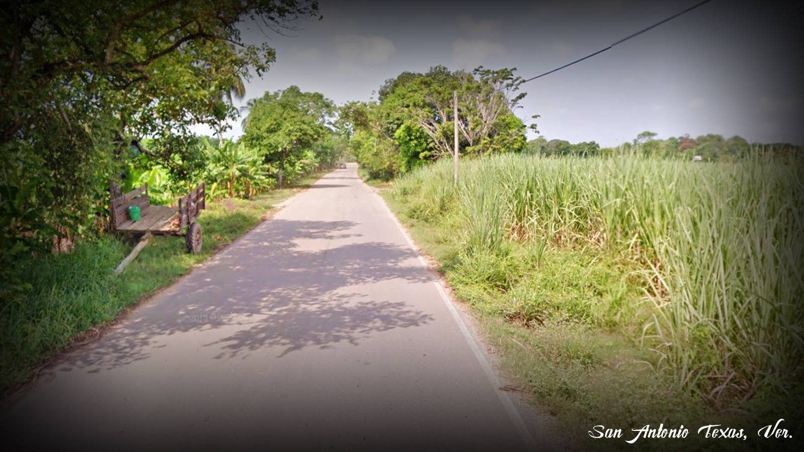

La localidad se encuentra cubierta por agroecosistemas dominado por diversos pastizales, platanales, cultivos de mango y sobre todo caña de azúcar entre otros. Igualmente se encuentran árboles de pochota, múchite, cópite, mulato, palmeras de coco y coyol, así como el roble y el cedro, entre otras.
Debido a que en la mayor parte de la localidad están ocupadas por amplias regiones de pastizales y caña de azúcar es posible encontrar con cierta abundancia, especies menores o medianas, como:Conejo, Coyote, Tacuazín o Tlacuache, Armadillo, Comadreja, Brazo fuerte u Hormiguero, Ardillas; Reptiles como: Iguanas, Tortugas, Lagartos y diversas víboras y serpientes (Coralillo, Nauyaca, Chicotera, de agua y de tierra y muchas otras en menor proporción.
Así mismo coexisten en la región diversas especies de aves como: la urraca o picho, paloma torcaza, colibríes, petirrojos, pecho amarillo, pijul, calandria, golondrina, primavera, pájaro carpintero, gavilán, tórtolas (pepenchas), entre muchas otras.
Entre las especies que aún prevalecen pero que se encuentran en peligro de extinción por la destrucción de su hábitat y tráfico ilegal son: loros, pericos; así como la cacería para consumo humano, que principalmente se ejerce sobre las tortugas de río (chachagua, chopontil, tortuga pinta), iguanas y conejos de campo.
